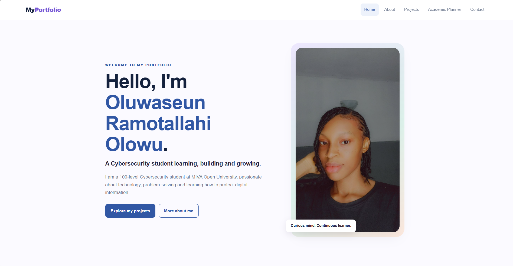
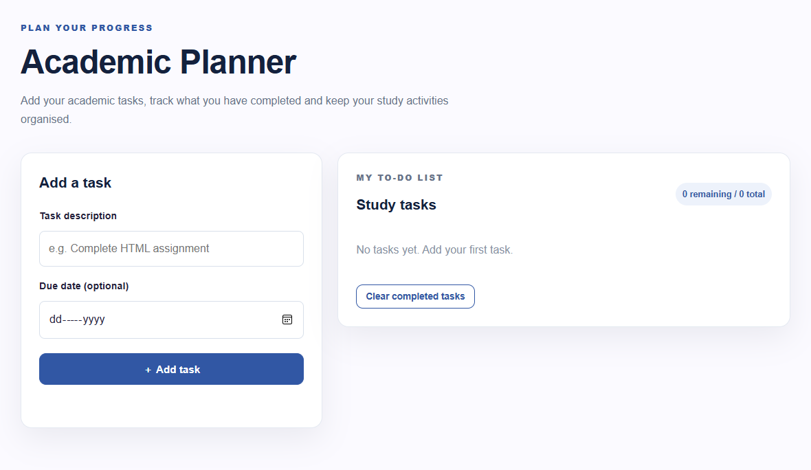
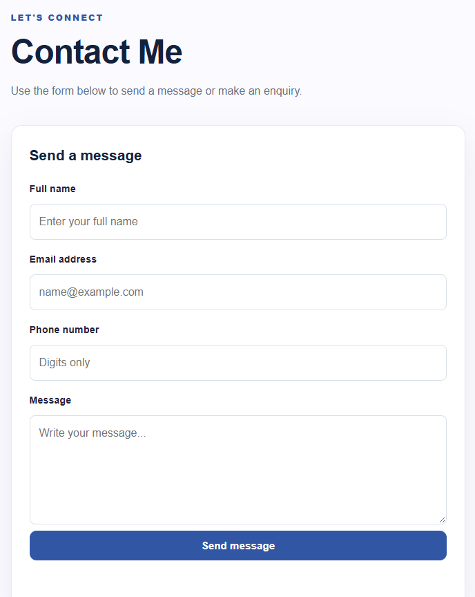

HTML · CSS
Personal Portfolio
A responsive website designed to introduce a student, present skills and showcase completed work.
View website →WHAT I'VE BEEN WORKING ON
These sample projects demonstrate concepts I am learning. Replace them with your own work as you complete more projects.

A responsive website designed to introduce a student, present skills and showcase completed work.
View website →
A simple task management tool for adding academic activities, completing tasks and deleting them.
Try the planner →
A contact form that checks required fields, email format and phone number digits before displaying a confirmation.
View contact page →This sample multimedia element demonstrates video and audio included in an HTML page.
An internet connection is required to load this sample video.